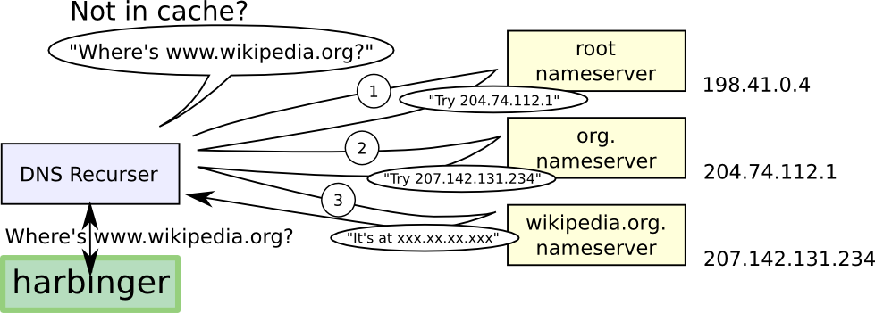

TCP-DNS
Table of Contents
- 1. TCP & DNS
- 2. Telephone Numbers
- 3. Hostnames -> IP addresses
- 4. Parts of a Hostname
- 5. Hostnames -> IP addresses
- 6. Example
- 7. Mappings Types
- 8. Why Separate Names & Addresses?
- 9. Caching
- 10. Browsers
- 11. Highest selling domain names
- 12. IP is Unreliable
- 13. Transport Control Protocol
- 14. Telnet
- 15. Flexibility
- 16. Composability!
- 17. Overview
1 TCP & DNS
2 Telephone Numbers
- Specify a device, not necessarily a person
- But to call a person, we eventually need to call a device
- How do we map between a person and their phone?
2.1 Parallels notes
- Keeping your phone number is recent, but still may need to change
- Home, cell numbers services to balance between them
- Ultimately, we get a phone number from the person
- But we can trust other people who have it to share
3 Hostnames -> IP addresses
- Just like my telephone number, we associate names like
yelp.comto a number - Association is done using Domain Name Service (DNS)
- DNS has a hierarchy for finding who can authoritatively provide an IP address, and typically has caching once the question has been answered
4 Parts of a Hostname
- Top Level Domain
- highest level in domain hierarchy:
.com.org.edu.uk.cn - Subdomain
- labels specifying the hierarchy reading from right to left
- Hostname
- domain name with an IP address
4.1 Details notes
- The first subdomain can be registered by domain registrars
- Further subdomains can be generated by domain owners (eg.
www.google.com,people.ischool.berkeley.edu - Subdomains can be arbitrary, but typically used for department (eg
ischool), service (eg.www), or area (en) comis not a hostname because it does not have an IP
5 Hostnames -> IP addresses
- To find a mapping, a client asks a root name server
- The nameservers will recursively direct the client to the domain authority
- Authority will return an IP address, client may optionally cache

5.1 Caching notes
- Caching can happen at many levels
- Typically your computer will ask the ISP name server
- The ISP nameserver will recursively lookup the result and cache it for the next customer
6 Example
host -v -t A people.ischool.berkeley.edu 199.7.83.42 ;; AUTHORITY SECTION: edu. 172800 IN NS a.edu-servers.net. ;; ADDITIONAL SECTION: a.edu-servers.net. 172800 IN A 192.5.6.30 host -v -t A people.ischool.berkeley.edu 192.5.6.30 ;; AUTHORITY SECTION: berkeley.edu. 172800 IN NS phloem.uoregon.edu. berkeley.edu. 172800 IN NS adns1.berkeley.edu. ;; ADDITIONAL SECTION: phloem.uoregon.edu. 172800 IN A 128.223.32.35 adns1.berkeley.edu. 172800 IN A 128.32.136.3 host -v -t A people.ischool.berkeley.edu 128.32.136.3 ;; ANSWER SECTION: people.ischool.berkeley.edu. 3600 IN CNAME harbinger.ischool.berkeley.edu. harbinger.ischool.berkeley.edu. 3600 IN A 128.32.78.16
6.1 Root notes
- Root server addresses are lettered
athroughm, we'll use ICANN's - Provide
authorityinformation about who to query next - Down to DNS provider for people
7 Mappings Types
- A
- IP Address (main record type)
- CNAME
- alias for another domain name
- MX
- mail transfer agents
- TXT
- meta data
7.1 Many others notes
- http://en.wikipedia.org/wiki/List_of_DNS_record_types
- TXT originally started as human notes, but has evolved to store metadata about a domain, for example encryption keys
8 Why Separate Names & Addresses?
- Different semantic meaning
- May want other mappings: names to street addresses
- They don't have to be the same, so keep flexibility
8.1 Tradeoffs notes
- Flexibility wins again
9 Caching two_col
- Inefficient to always start at the root
- Instead, ask a "local" server
- "local" server does the recursive lookup, caches result

9.1 Why? notes
- Computers on a network likely to ask for the same stuff
- eg. all computers in this classroom probably have now asked for github.com
- Why have all of us do the full recursion?
- Instead have a nameserver on campus do the recursive lookup for us, cache
the result
- If it is in cache, and still valid just return answer
- DNS returns "time to live" that specifies how long result can be cached
10 Browsers
- Type in a URL with domain name (eg.
yelp.com) - Browser uses DNS to find IP address (eg.
199.255.189.60) - Connects to address on a port (eg.
80) - Sends packets of data containing
GET / HTTP/1.1
10.1 Packets notes
- Operating System typically breaks up a stream of data into packets
11 Highest selling domain names animate
- diamond.com $7.5 million
- fb.com $8.5 million
- porn.com $9.5 million
- fund.com $9.99 million
- hotels.com $11 million
- sex.com $13 million
11.1 Source notes
12 IP is Unreliable
- Best effort delivery
- No guarantees
- How do we build a reliable Web on it?
12.1 Components notes
- How to build stateful applications on stateless protocols?
- Keep state on the host
13 Transport Control Protocol
- Correctness
- prevent data corruption
- Reliability
- ensure delivery or error
- Ordering
- add sequence numbers
- Congestion
- back off
13.1 Accurate delivery notes
- How do you know if the data you receive is the same as was sent? Checksum
- How does the sender know if a packet was delivered? Ack
- How do we know the ordering of the data? Packet sequence numbering
- TCP also adds "ports": ability to connect to a particular application on the destination host
13.2 Checksum
- Take the bits in a message
- Add them up*
- Append the sum
- Example: "jim" = 106 + 105 + 109 = 320
13.3 Details notes
- Many other ways of calculating besides addition, eg xor or polynomial formulas
- Difference between checksum for errors and checksum against attackers
13.4 Ack two_col
- When a machine receives a packet, it acknowledges it
- If a machine does not receive an ack, it resends
- To keep track of messages, uses a sliding window

13.5 Window notes
- If the sender waits for every ack, things get pretty slow
- So instead we keep sending up to a certain point, but then if we don't hear anything for a while we stop and wait for ack
- Like a good phone conversation
13.6 Sequence Numbers two_col

- If we can resend, or packets can take different routes, they can be delivered in a different order
- How do we know the right order?
- Agree on a starting number, send numbered packets
- Client will keep track of packets received, deliver data in order to app
13.7 Tricks notes
- We can also use this as an optimization for acks: Send ack for all packets < current one
- Agreement = "TCP Handshake"
13.8 Three-way Handshake
- SYN
- Synchronize using a random starting number
- SYN-ACK
- Acknowledge syn packet with an ack number and its own random starting number
- ACK
- Acknowledge the SYN-ACK packet
13.9 Timeline notes
- Client sends request
- Server responds
- Client responds
13.10 Congestion
- Why are packets delayed?
- Often, it is because the system is overwhelmed
- So back off! If it is still overwhelmed, back off more!
13.11 Exponential notes
- Wait 1 second, 2 seconds, 4, 8, 16…
- Randomize wait, so not everyone tries again at the same time
- Then ramp up again: larger packets, bigger window
14 Telnet
- TCP/IP and DNS client
- Connects to a host at TCP/IP level
- Up to you to communicate with HTTP or any other protocol
- Does TCP/IP know about domains or hostnames?
14.1 No! notes
- That's why we must send
Hostheader in HTTP
15 Flexibility two_col
- TCP/IP most commonly used, but not the only ones!
- UDP (User Datagram) used for DNS
- Realtime protocols (voice, video) may value timeliness over correctness

16 Composability!
- Internet is a network of networks
- IP used to send packets between two addresses
- DNS maps names to addresses
- TCP ensures reliable communication
- Web built on Internet technology
16.1 Notes notes
- Each component evolved, and we're not stuck with any one particular technology
- But all parts must be working correctly for users to get a great experience
17 Overview

17.1 Overview notes
- What do these arrows represent? TCP/IP connections
- What kind of requests are being made to the DNS server?
- What is in the "payload" of the first TCP/IP packets sent to the web
server? (GET … HTTP/1.1)